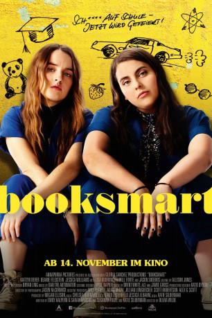
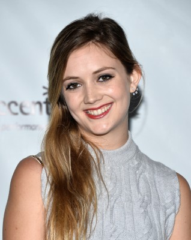

#12099 Booksmart
 
 IMDB-Wertung: 7.2 / 10
IMDB-Wertung: 7.2 / 10  Tomatometer: 97
Tomatometer: 97  Metascore: 84
Metascore: 84 
Molly und Amy haben in der Highschool alles richtig gemacht. Mit Bestnoten blicken sie nun wohlverdient einer glänzenden Zukunft an Elite-Unis entgegen und herab auf die Loser ihrer Klasse. Doch am letzten Schultag stellt Molly voller Entsetzen fest, dass es auch ihre Mitschüler an die besten Unis geschafft haben – obwohl diese offenbar nur Party im Kopf hatten. Fest entschlossen, sich nichts entgehen zu lassen, überredet sie Amy den Spaß der letzten Jahre in den noch verbleibenden Stunden auf der Highschool nachzuholen. Eine epische Nacht des schlechten Benehmens steht ihnen bevor, an deren Ende eine Lektion steht, die man nicht aus Büchern lernen kann.\r Kaitlyn Dever und Beanie Feldstein brillieren mit Witz und Girlpower als unbestechliches Duo und empfehlen sich als Stars von morgen.
BDRIP MIC
Jahr: 2019
Dauer: 102 Minuten
FSK: 12
Land: USA Studio: United Artists ReleasingTonspuren: DD2.0 - ,
Untertitel: Deutsch, Englisch,
Auflösung: 1080p (1920x808) Größe: 7976 MB
Genre: Komödie
Regisseur: Olivia Wilde
Drehbuch: Emily Halpern, Sarah Haskins, Susanna Fogel, Katie Silberman
Soundtrack: Dan The Automator
Darsteller:
- Kaitlyn Dever als Amy
- Beanie Feldstein als Molly
- Jessica Williams als Miss Fine
 Jason Sudeikis als Principal Brown
Jason Sudeikis als Principal Brown- Lisa Kudrow als Charmaine
 Will Forte als Doug
Will Forte als Doug- Victoria Ruesga als Ryan
- Mason Gooding als Nick
 Skyler Gisondo als Jared
Skyler Gisondo als Jared- Diana Silvers als Hope
 Molly Gordon als Triple A
Molly Gordon als Triple A-  Billie Lourd als Gigi
- Eduardo Franco als Theo
- Austin Crute als Alan
- Noah Galvin als George
- Michael Patrick O'Brien als Pat the Pizza Guy
- Ben Harris als Yacht Waiter
- Kyle Samples als Butler
- Deb Hiett als George's Mom
- Bluesy Burke als Cindy
- Christopher Avila als Rob
- Stephanie Styles als Alison
- John Hartman als Yacht Waiter #2
- Adam Simon Krist als Dick
- Ellen Doyle als Murder Mystery Nurse
 Maya Rudolph als Motivational Voice
Maya Rudolph als Motivational Voice- Drew B. Anderson als Party Goer (uncredited)
- Olivia Cannizzo als Cheerleader (uncredited)
- Chelsea Debo als Pool Girl (uncredited)
- Toni Dickens als Student / Party-Goer (uncredited)
- Adrian Favela als Party Kid (uncredited)
- Sarah Jarman als Graduating Student (uncredited)
- Tristen Kim als Streaker (uncredited)
- Cadence Murray als Tourist (uncredited)
- Trisha Simmons als Librarian (uncredited)
- Nico Hiraga als Tanner
- Gideon Lang als Skip
- Kevin Huang als Kevin (uncredited)
Datei: X:\2019(A-F)\Booksmart (2019, FSK12, 1920x808).mkv seit 05.12.2019
Festplatte: HD 2018(G-Z)-2019(A-Z)
 Es gibt insgesamt 60 Filme in der Gruppe '2019(A-F)'
Es gibt insgesamt 60 Filme in der Gruppe '2019(A-F)'